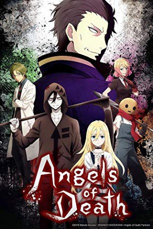

")
 
 IMDB-Wertung: 6.4 / 10
IMDB-Wertung: 6.4 / 10  Metascore:
Metascore: 
Als die 13-Jährige Rachel erwacht, findet sie sich im Keller eines verlassenen Gebäudes wieder. Sie hat all ihre Erinnerungen verloren und weiß nicht, wo sie sich befindet. Als sie einsam und benommen durch das Gebäude irrt, trifft sie auf einen mysteriösen Jungen, der sich ihr als Zack vorstellt. Er trägt eine Sichel wie die eines Sensenmannes bei sich und sein gesamter Körper ist in Verbände gewickelt. Zwischen Zack und Rachel entsteht nach und nach eine seltsame Bindung und gemeinsam versuchen sie, aus dem Gebäude, in dem sie beide gefangen sind, zu entkommen.
Jahr: 2018
Dauer: 23 Minuten
FSK:
Land: Japan Studio: J.C. StaffTonspuren: DD2.0 - ,
Untertitel: Deutsch,
Auflösung: 1080p (1920x1080) Größe: 545 MB
Genre: Thriller, Horror, Abenteuer, Animation/Trick, TV-Serie
Regisseur: Kentarô Suzuki, Kouhei Hatano, Yûsuke Onoda, Kazunobu Shimizu, {"name": "Shigeki Awai"}
Drehbuch: {"name": "Makoto Sanada"}
Soundtrack:
Darsteller:
 Jamie Marchi als Catherine Ward, 6 episodes, 2018
Jamie Marchi als Catherine Ward, 6 episodes, 2018 R. Bruce Elliott als Abraham Gray, 5 episodes, 2018
R. Bruce Elliott als Abraham Gray, 5 episodes, 2018 Brittney Karbowski als Edward Mason, 4 episodes, 2018
Brittney Karbowski als Edward Mason, 4 episodes, 2018 Hôchû Ôtsuka als Abraham Gray, 1 episode, 2018
Hôchû Ôtsuka als Abraham Gray, 1 episode, 2018 Monica Rial als Rachel's Mom, 1 episode, 2018
Monica Rial als Rachel's Mom, 1 episode, 2018 Takahiro Sakurai als Daniel Dickens, unknown episodes
Takahiro Sakurai als Daniel Dickens, unknown episodesDatei: X:\HD-Anime-Serien\Angels of Death\Angels of Death E01 Töte mich bitte.mkv seit 12.01.2020
Festplatte: Gemischt-01+Anime
 Es gibt insgesamt 67 Filme in der Gruppe 'HD-Anime-Serien'
Es gibt insgesamt 67 Filme in der Gruppe 'HD-Anime-Serien'